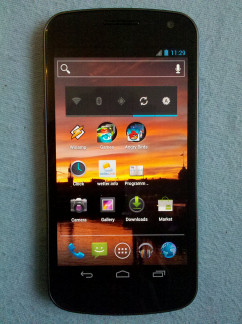
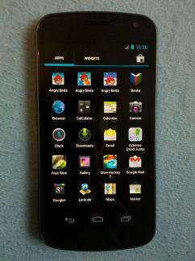
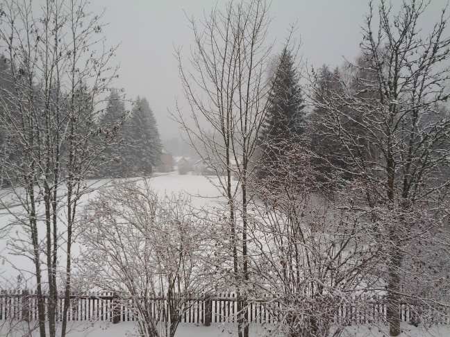

Dunno whether I have been naughty or nice, but Santa decided to put a Google Galaxy Nexus under our christmas tree. Till then I have played with the phone for almost two weeks so I can give a short evaluation and comparison to my old Motorola Milestone (Droid).
Overview
The first impression of the Galaxy Nexus was – wow – that’s a brick! Indeed, it’s really huge compared to my old Motorola Milestone (13.5 cm x 6.7 cm). Nevertheless it fits pretty well in the pockets of my Mustangs, maybe because of the slightly curved display. Second, it’s light as most of the case consists of plastic. I don’t know whether that’s good or bad—hopefully it won’t slip out of my hands and fall down to the floor…
The display
As already mentioned the Galaxy Nexus has a huge display offering a 720x1280 pixel Super AMOLED screen. The colors are brilliant. Black is black, white is white. Compare with an iPhone and you will see the difference. The only downside I faced so far: if the brightness is decreased you may see a few artifacts/stripes on gradients, but one may be used to them from LCD panels as well.
 
Camera
Beforehand, the camera of a mobile phone is unlikely to reach the quality of a DSLR. But compared to the Motorola cam this one is superb! Artifacts are only visible with bad light. Moreover, it is really fast, so I always tap the cam button a few times and select the best of the shots afterwards. Here are few photos I have shot at home and at lake constance at 25%.

Tethering
As I never rooted my old Milestone, tethering was a pain since all traffic was proxied via a VPN connection over USB. Now I go in the new settings screen, hit enable WiFi tethering and then connect with my lappy over Wireless LAN. That’s it!
Data usage
Finally, Android 4 offers a nice way to track data usage over WiFi and mobile networks. You can limit the data and track how much all the apps consume. One of the nicest additions in my humble opinion. In general, I really like the revamp of the system settings and that they are always accessible from the top panel.

All in all the Galaxy Nexus is a nice phone, despite its size and plastic body. With Ice Cream Sandwich Android made a big step in the right direction – better overview and easier to use. I also hope that more apps with the new Holo interface will make it to the market during the next months.